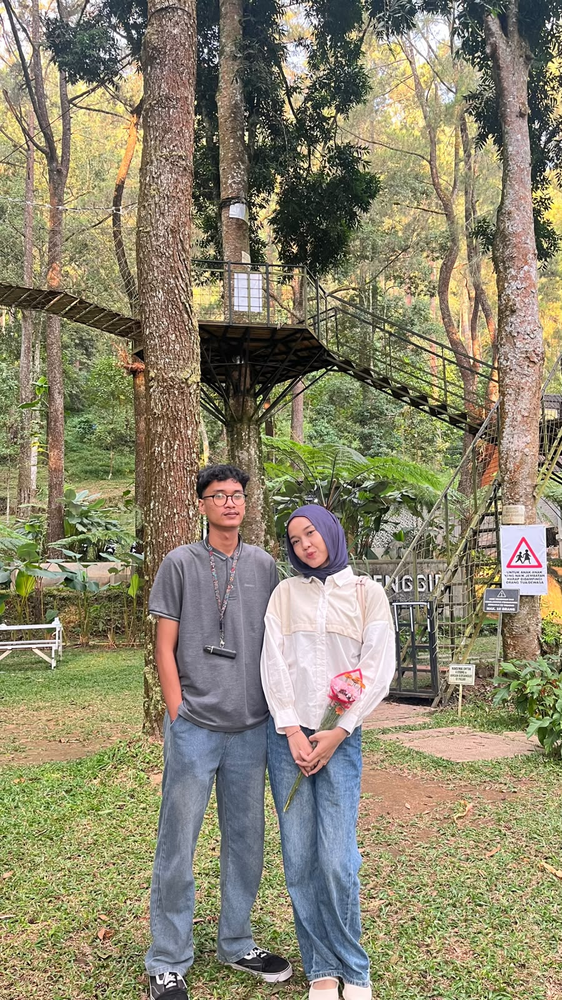
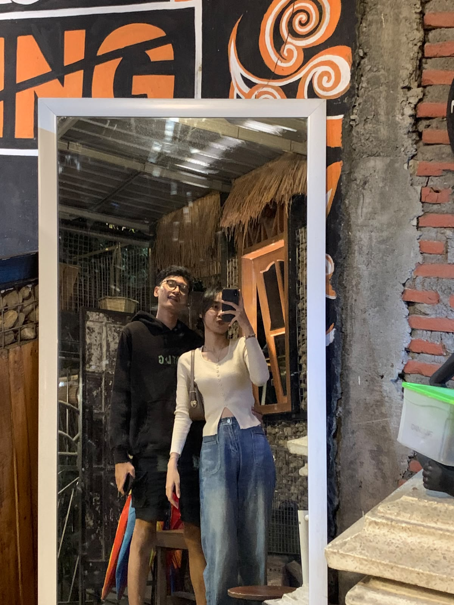
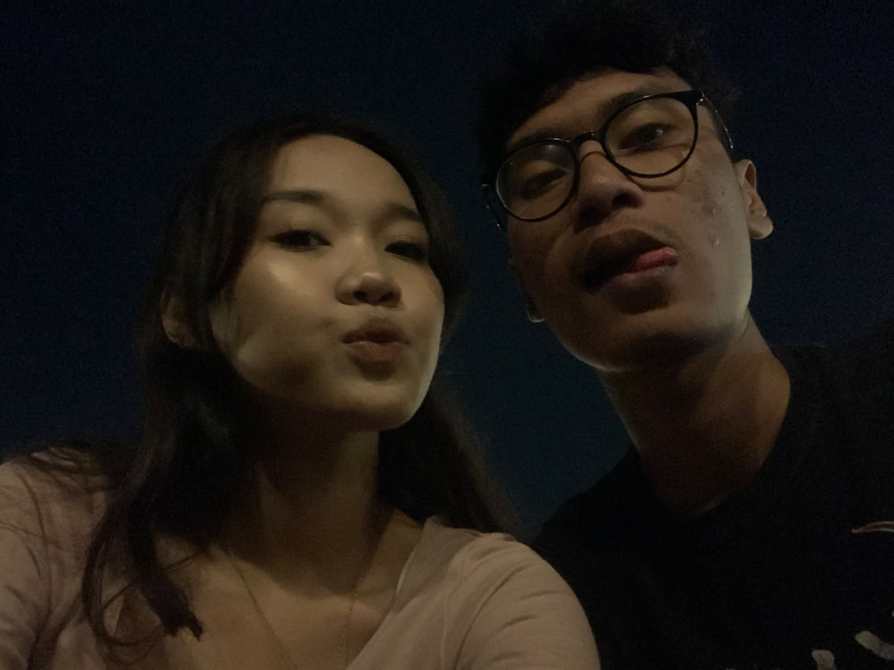

Happy Anniversary!
Melihat senyummu adalah anugerah terindah bagiku.
Perjalanan Setahun:
Menghitung momen indah...



"Terima kasih ya sudah bertahan dan berjuang bersamaku sampai hari ini. Terima kasih atas segala senyuman, kesabaran, dan pelukan hangat yang selalu menenangkan. Aku bersyukur memilikimu, dan semoga hari-hari kita ke depan selalu dipenuhi kebahagiaan. I love you! 🥰"